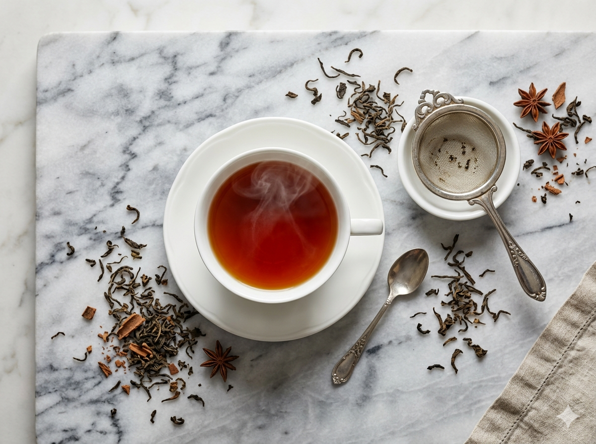

Featured
Editor's Pick
The Lost Art of Brewing Highland Ceylon Tea
From the precise water temperature to the unexpected role of altitude in steep time — what every cup of Ceylon highland deserves, and what most kettles get disastrously wrong.
Read the Full Story